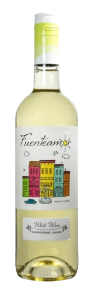

Acheter
FUENTEAMOR SANS BULLES BLANC
Fuenteamor Blanc, un vin biologique rare sans alcool avec une intensité aromatique et une touche de fruits tropicaux. Pas frais et léger, doux, structuré et harmonieux.
DÉTAILS :
Calories pour 100 ml : 20,9 calories
Degré d’alcool : moins de 0,0 % alc./vol
Fuenteamor Blanc sans alcool à base de vin blanc désalcoolisé est fruitée et agréable, facile d’accès, elle peut être consommée à tout moment et peut accompagner presque tous les plats et particulièrement les poissons, crustacés ainsi que la volaille.